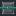

温室制御装置
alaindustrial:crystal_farm_controller
概要
クリスタル温室は、ジオードへ行く道のりを帳消しにすることなくアメジストを再生可能にします—— 見つけたひとつのジオードを供給源に変えるのです。これが来るまで、このモッドのクリスタル系統は すべてバニラのアメジストの欠片で行き止まりでした。共鳴の欠片も空間結晶もそこから作られ、その先で 共鳴コイル、テレポートチップ、ラポトロンクリスタル、共振クリスタルを養います。欠片はジオードで 掘り出す以外に入手先がありませんでした。
温室は機械ではなく建築物です。プレイヤー自身が密閉された部屋を建て、中にクリスタル苗床を置き、 欠片を与える——すると苗床は本物のバニラのアメジストの塊を実らせ始めます。似たものではなく、 同じブロックそのものです。見た目も、音も、壊れ方も、幸運への反応も同じ——ドロップを決めるのが バニラのルートテーブルだからです。
インキュベーターとの違い。インキュベーターは確率と即座の結果の話です。入れて、ウランと EU/FE で 支払い、受け取る。温室は待つことと眺めることの話です。結果は決定的で、代価は時間です。この 2 つは 別ジャンルの機械であり、意図的に重なりません。
部屋の建造
温室は 5 種類のブロックからなりますが、必須なのはそのうち 2 つ——温室の床と温室制御装置 です。
| ブロック | 役割 |
|---|---|
| 温室の床 | シェル：床、壁、天井——ガラスでない部分すべて |
| 温室のガラス | シェル：成形時に一枚板へ溶け合うガラス面 |
| 温室のドア | 出入口。プレイヤーの後ろで自分から閉まる |
| 温室制御装置 | 頭脳：部屋を走査し、成長を進め、不備を報告する |
| クリスタル苗床 | 内部に置く。この上に塊が育つ |
制御装置は壁に埋め込み、パネルを外へ向けます——部屋の内部は、それが向いている面の反対側に あります。床や天井の制御装置では役に立ちません。これは読むためのパネルだからです。
形状は閉じてさえいれば自由
部屋は箱である必要がありません。制御装置は内部の空気を塗りつぶし、その空気を閉じ込められる形 ならすべて受け付けます。ドーム、階段状のピラミッド、L 字の張り出し、階のあいだに吹き抜けのある 2 階建ての温室。制限は体積にだけあります。
| 項目 | 値 | 設定キー |
|---|---|---|
| 最小体積 | 27 ブロック | |
| 最大体積 | 4096 ブロック | |
| 制御装置からの最大距離 | 24 ブロック | |
| 再走査の間隔 | 40 ティック（2 秒） |
長さではなく体積です。「差し渡し 3 ブロック」はドームには何の意味もありません。
最大距離は体積の上限より厳しい、2 つめの安全装置です。バランス調整のためではありません。 そうしないと、密閉されていない部屋では塗りつぶしが数十ブロック脇へ流れ出し、読み込まれていない かもしれないチャンクを読みに行ってしまいます。
ガラスはどれでも構いません——バニラのもの、色付きのもの、#c:glass_blocks 経由で他モッドの ものも。色付きの温室はひとりでに実現するもので、そのための専用コードはありません。ドアもバニラの ものならどれでも受け付けます。自前のものだけではありません。
建造中にプレイヤーが見るもの
走査は目に見えないので、成形は 3 つの方法で同時に示されます。
- シェルが継ぎ目を失う——床とガラスには枠のない第 2 のテクスチャがあり、成形した部屋は箱の山
ではなくひと続きの面として読めます。輪郭に沿った枠は残り、シルエットを縁取ります。
- 音——閉じたその瞬間の和音がひとつ。遷移のときだけ鳴ります。
- パーティクル——床の継ぎ目に沿った閃光。
壁をひとつ崩せば、シェルは即座にばらばらな見た目へ戻ります。
部屋が閉じないとき
制御装置を右クリックすると、何が問題かをチャットへ報告します。その温室が以前に成形したことがあれ ば、メッセージには欠けたブロックの座標も添えられ、そこから 2 秒ごとに煙が上がります。
| 状態 | 報告される内容 |
|---|---|
| 成形済み | 体積、苗床の数、水の有無 |
| 閉じていない | 欠けたブロックの座標（特定できる場合）。できなければ単に「閉じていない」 |
| 小さすぎる | 座標なし |
| 制御装置が壁にない | 制御装置の座標 |
| 制御装置が 2 つある | もう一方の制御装置の座標 |
座標はいつも出るわけではなく、それは意図的です。塗りつぶしは自分がどこから漏れているか言えま せん。穴から外へ出て、距離の上限にぶつかるまで進み続けるだけです。ですから穴は塗りつぶしからでは なく、前回うまく成形したときに覚えておいたシェルのマス一覧から探します——欠けたブロックとは、その 中でシェルのブロックでなくなったマスのことです。一度も成形したことのない温室には比べる相手が ありません。そのときは座標をまったく出しません。見当違いの場所を見に行かせるくらいなら、 「閉じていない」と正直に言うほうがましだからです。
苗床
クラフトした時点では死んでいます——バニラの芽生えたアメジストと同じ結晶質の石から、色だけが 抜けたものです。アメジストの欠片を与える（右クリック）と色が満ち、実り始めます。
- 1 クリックにつき欠片 1 個。充填量はホットバーの上の行に表示され、満ちるにつれて音の高さが
上がります。
- アメジストブロックは欠片 4 個として扱われます——バニラがそのクラフトに入れているのと同じ数
です。
- いつでも継ぎ足せます。充填が尽きるのを待つ必要はありません。
- 上限は待ち行列の芽 16 個です。ほぼ満杯の苗床はアメジストブロックを受け付けません。
ブロックは一度に芽 4 個ぶんを与えるので、空き 1 つのために入れると、希少なアイテムの 4 分の 3 を 黙って燃やすことになります。欠片での継ぎ足しならいつでもできます。
塊は苗床の空いた面に育ち、バニラの段階 小さな芽 → 中くらい → 大きい → 塊 をたどります。育ち きった塊はツルハシで落とすと欠片 4 個になります（バニラのテーブル。幸運も効きます）。 熟していない芽は何も落としません——バニラと同じです。
温室の外にある苗床は、そのことを正直に告げます。充填はどこでもでき、カウンターもまったく同じ ように増えます——それでも何も育ちません。ですから、成形済みの温室がひとつも見ていないブロックに 与えたときは、カウンターの代わりに警告が返ります。
エネルギー
| 項目 | 値 |
|---|---|
| 役割 | バッファ付きの消費側。必須ではない |
| バッファ（EU/FE） | 4000（） |
| 最大入力（EU/FE/ティック） | 32（LV） |
| 成長イベント 1 回あたりの EU/FE | 64（） |
ここでのエネルギーは条件ではなく加速装置です。ケーブルが 1 本もない温室でも動きます。ただ遅いだけ です。EU/FE は実際に起きた成長イベントに対してのみ引かれます。エネルギーが買うのはクリスタルで あって、サイコロの目ではありません。
成長と収支
成長はバニラのアメジストと同じく確率的です。 ティックごとに、 苗床それぞれがサイコロを振ります。サイコロは苗床ごとに別です——共通の 1 回で振ってしまうと温室 全体が足並みをそろえて育ち、生き物ではなく機械のように読めてしまいます。
クリスタル 1 個にはイベント 4 回かかります。芽が現れ、さらに 3 回育つ必要があるからです。
| 条件 | 除数 | 現実時間 | ゲーム内日数 |
|---|---|---|---|
| 何もなし | 270 | 約 1 時間 30 分 | 4.5 |
| 電力のみ | 135 | 約 45 分 | 2.25 |
| 水のみ | 90 | 約 30 分 | 1.5 |
| 水と電力 | 45 | 約 15 分 | 0.75 |
ゲーム内の 1 日は現実の 20 分です。最後の列はこの換算によります。
これは苗床 1 台あたりの時間であって、温室全体の時間ではありません。 苗床はそれぞれ独立した サイコロで並行して育つため、25 台の大部屋なら水もケーブルもなしで約 3.6 分に 1 つ、両方そろえば 約 30 秒に 1 つの晶塊を出します。ここでは加速装置よりも規模のほうが効きます——温室は横へ広がる ものだからです。
| 項目 | 値 | 設定キー |
|---|---|---|
| 成長判定の間隔 | 100 ティック（5 秒） | |
| 基本の除数 | 270 | |
| 水による加速 | ÷3 | |
| 電力による加速 | ÷2 | |
| 欠片 1 個あたりの芽 | 1 |
採算。欠片が入る——クリスタルが出る——欠片が 4 個戻る。見返りは4 倍で、1 時間半で支払い ます。苗床を満たす（芽 16 個）には欠片 16 個かかり、チャンクが読み込まれたままなら約 1 日で 64 個 返ってきます。
数字を守っているのは L1 テスト CrystalGrowthTest です。欠片が自分より高く戻ってくることも、 見返りが上へ飛んでいないことも検査します——アメジストを刷る農場は、アメジストを食う農場と同じ くらい確実にこの系統を壊すからです。
ドア
機構としてはごく普通のバニラのドアです——蝶番、上下 2 つの半分、レッドストーン——ただし 1 つだけ 足されています。自分で閉まるのです。
| 項目 | 値 | 設定キー |
|---|---|---|
| 自動で閉まるまでの遅延 | 100 ティック（5 秒） | |
| 出入口がふさがっているときの再確認 | 10 ティック |
開いたドアは温室の密閉を壊しません。走査はブロックが「何であるか」を見るのであって、それが 開いているかどうかは見ません——原子炉のエアロックとまったく同じです——ですからドアを開け放った 温室もそのまま育ち続けます。以前ここには逆のことが書かれていました。それが一度も事実でなかったと 監査が突き止めたのです。
「開いたドアは密閉を壊す」という案は検討のうえ却下されました。誠実ではありますが、そうすると中へ 入るたびにシェル全体が消灯し、5 秒後に塗り直されます——ホールほどの温室なら 1 回の訪問で 2 度 またたくことになり、それは両方向それぞれ数千回のブロック更新です。
つまりドアが閉まるのは機構のためではなく、開け放たれた温室が見た目に悪いからであり、そして部屋が それ以外は閉じているからです——モブが入ってくるのは、まさに閉まっていないドアからです。
- レッドストーンはドアを開いたままにします——信号は「意図して開けてある」という意味です。
- 出入口に立っている者がいればドアは閉まりません——判定は上下両方の半分を見て、生き物だけを
数えます。足元に落とした欠片ではドアは止まりません。
ブロックの性質
| ブロック | 硬度 | 爆発耐性 | ツール | 備考 |
|---|---|---|---|---|
| 温室の床 | 3.0 | 6.0 | ツルハシ | formed/edge プロパティ |
| 温室のガラス | 3.0 | 6.0 | ツルハシ | 、formed/edge プロパティ |
| 温室のドア | 3.0 | 6.0 | ツルハシ | 、ピストンで壊れる |
| 制御装置 | 3.0 | 6.0 | ツルハシ | formed プロパティ、水平の facing |
| 苗床 | 3.0 | 6.0 | ツルハシ | アメジストの音、charges/tended プロパティ |
苗床は必ず死んだ状態で戻ります。充填とは費やした時間であり、働いている苗床をポケットに入れて 持ち去らせるわけにはいきません。
レシピ
| 何 | 配置 | 産出 |
|---|---|---|
| 温室の床 | TGT / GTG / TGT — T：焼き入れ鉄板、G：ガラス | 4 |
| 温室のガラス | GGG / GTG / GGG | 8 |
| 温室のドア | GG / GG / TT — G：温室のガラス | 2 |
| 制御装置 | KAK / CMC / KKK — K：温室の床、A：アメジストの欠片、C：電子回路、M：マシンケース | 1 |
| 苗床 | QSQ / SAS / QSQ — Q：クォーツ、S：滑らかな玄武岩、A：アメジストブロック | 1 |
苗床はアメジストブロックを囲んで組み上げます——バニラの芽生えたアメジストがアメジストである のと同じです。そのうえで、温室のどのレシピも、温室が存在する理由そのものを要求しません。欠片は 与えるために要るのであって建てるために要るのではない——さもなければ、この農場が直そうとしている まさにその欠乏で農場の代金を払うことになります。
進行
- ティア：LV。しかもそれすら任意です。
- 系統をよみがえらせます：
resonant_shard、spatial_crystal、そしてそれらを通じて共鳴コイル、
テレポートチップ、ラポトロンクリスタル、共振クリスタル。
- 出発点としてジオードを見つけている必要があります——最初の欠片はそこで手に入ります。温室は供給源
を再生可能にしますが、無からそれを生み出しはしません。
パフォーマンス
温室でティックする唯一のオブジェクトは制御装置です。苗床にも、その上で育つ塊にも、ブロック エンティティもランダムティックもありません。苗床 100 台の農場がワールドに足すティック対象は 1 つ だけです。同じことが「成形した部屋の中でしか育たない」という規則を、忘れうる検査ではなく構造上の 真として成り立たせています。
関連項目
- インキュベーター — 隣のジャンル：確率的で即座の突然変異に対する、決定的で時間を
かけた成長。
幾何だけで、走査器は別物です（箱と体積の塗りつぶし）。
クラフト
定型クラフト
▶
温室制御装置